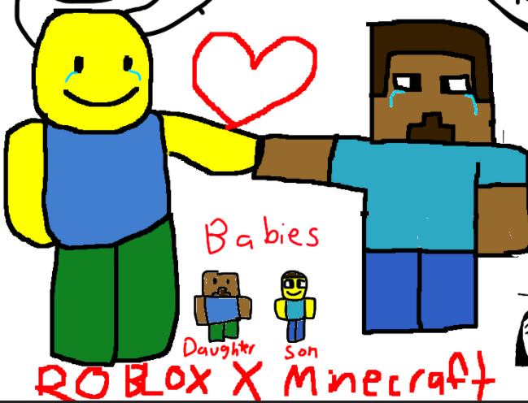

| Image |
Title & Date |
Description |
|
Bentober Day 11 (10/11/24) |
I think I perfectly captured Conan's likeness in this drawing, especially those creepy little beady eyes of his. |
|
Bentober Day 3 (10/3/24) |
The way I drew Boots' hand is simply amazing. |
|
Bentober Day 1 (10/1/24) |
A very flattering portrait of Ben. |
|
Warrior Cats (9/21/24) |
King of the junjle... |
|
Cliff's Birthday Bash (8/28/24) |
I made this for Cliff from Errol Warwick's birthday. If you are reading this, it is too late. You officially have 5334 years of bad luck. Sorry! |
|
Shading (8/25/24) |
This is where I practiced my epic shading skills. |
 |
The 2024th Annual Fun, Whimsical, & Joyful Freight Train Joyride @ The Convention Of Fun, Whimsical, & Joyful Freight Train Joyrides in Some City, Some Country, Some Planet, Some Universe: Friendship Is Magic (Official Music Video) (8/3/24) |
Art fight attack for Yokai_zai, Zedleaked, PurpleDragon, monzterbatz, MarMar_Up, ricopop, allied_almond, Bladesterz, Legoian, witch_hats, ivykit, thumperreal, milkyuyuu, Ckwhc, Chocolate-korgi, ChickenHoops, Msigloo, PotatoRGB, Gubbyboi, chiptid, ApolloStar, poorlyflower, Darkia, and SHRILLARD. If anyone cares or knows what I'm talking about, yes, Johnathan is still hidden somewhere in this drawing. You just have to look very closely. |
|  |
Roblox X Minecraft (7/10/24) |
Most people wish they could have a romantic relationship as stable as these two. I also have no recollection of drawing this, it was just saved on my art folder. |
|
A Fast Food Place: OSHA Violation's Heaven, Hell's Kitchen (7/7/24) |
Art fight attack for peerkartosh, jc-clascy, errolwarwick, oilybastard, booty, boogiewoogie, VOCKORONST, Sleepy_pumpkin, ratheathen, IKILLEDTVGUY, Tygreenie, EmeraldTopaz, vesselvindicate, AnOldTeddyBear, Jammerlee, Typically, Nebowskii, TheGoldenStation, and viviolenxe. |
|
Magneto Visits South Park (5/27/24) |
Art trade thingy for Mercury ft. Stan, Kyle, Cartman, Kenny, and Mr. Boss as The Sun. |
|
The ABCs of Environmental Science (5/16/24) |
The final project for environmental science. I was on a huge time crunch for this, but I wanna give a shout out my homeboy Marc M.
for getting me through it. I stayed up all night bumping The Ultimate Party Collection Vol. 1 while drawing these. Foolishly, though,
I forgot to actually turn in the PDF. So, I got a 0 on the final, cementing my grade as a D which was painfully close to being
an F. Oh well, at least I still passed.
Click here to view it.
|
|
Wally The Windup Warrior (5/9/24) |
Drew this as a project for my environmental science class. Got full points despite submitting it really late. |
|
Crop Man (5/7/24) |
America's most beloved ambiguous fruit/vegetable mascot, Crop Man! |
|
Unfinished Regretevator Art (4/14/24) |
I definitely won't be finishing this. Just listing it here for the sake of archiving it. |
|
Mario Listening To Fun Factory (3/26/24) |
There goes Mario again with his insatiable bloodlust... Ignoring all stimuli to focus on finding the nearest goomba to murder. And he gets hailed as a hero? What a sick joke! |
|
Jesus Love (2/24/24) |
This is what world peace looks like. |
|
My Cat! (2/18/24) |
I drew this in a Roblox game called Draw A Blank. Somehow, I got last place. I wonder why... |
|
Drive Thru (2/3/24) |
Art for Fistikette's OC, Heavenly Host. |
|
Jesus (1/9/24) |
I really cannot explain why I drew Jesus a lot during this time. |